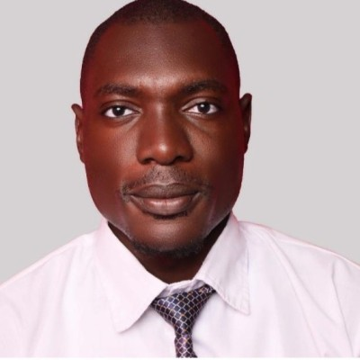

Embedded AI & Automation Engineer

Automation and Robotics Engineer with 13+ years of freelance expertise and 2+ years of industry experience focused on microcontroller-based motion control and servo drive firmware. At Synapticon GmbH in Stuttgart, developed and debugged PID/FOC algorithms for motion control firmware, resolved complex EtherCAT/PROFINET integration issues in Siemens TIA Portal, implemented secure FoE firmware updates, and optimized torque/position feedback loops via HIL simulations.
As a long-standing freelancer on Freelancer.com, delivered 13+ years of MATLAB and ML solutions for industrial robots, deep learning, signal processing, and autonomous systems. Developed ROS2 packages for Safe Motion Module (SMM) drives in testing and validation. In research at Kazakh-British Technical University, enhanced KUKA manipulator precision through Deep-Q learning integrated with embedded control systems. Proficient in C/C++, RTOS, and cross-team firmware validation.
Böblingen, GermanyA curated set of projects spanning embedded AI, robotics, automation, and power systems.
Pull requests and contributions to repositories I don't own.
Professional certifications verified on Coursera covering embedded systems, robotics, and engineering fundamentals.
Proposes a hybrid approach combining Extended Kalman Filter (EKF) with Deep Q-Network (DQN) for robust real-time state estimation and autonomous stabilisation of quadcopter UAVs in GPS-denied and turbulent environments. Achieved significant reduction in attitude drift compared to baseline PID controllers.
Developed a Reinforcement Learning-based adaptive control framework for coordinating multiple robot arms in an industrial painting application. RL agents learn optimal joint trajectories and real-time task allocation policies, enabling collaborative robots to adapt to varying surface geometries and painting conditions. The system integrates MATLAB for RL training and simulation with PLC-based coordination for real-time execution, hardware interfacing, and wrist movement diagnostics.